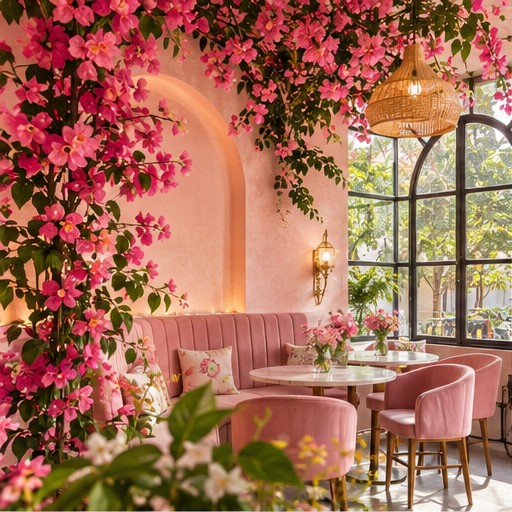
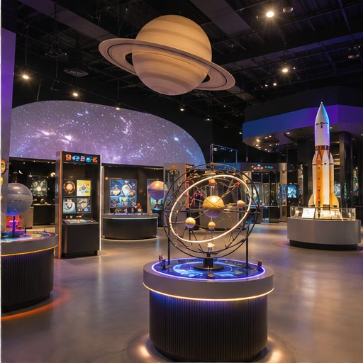
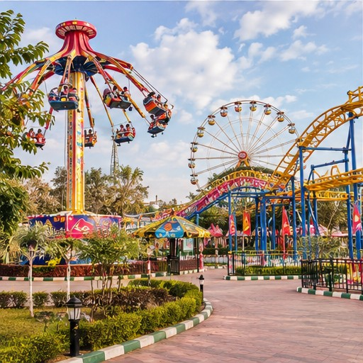
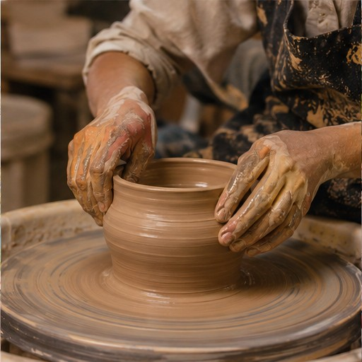
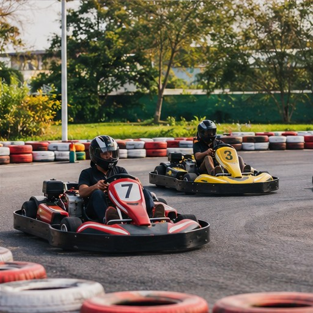
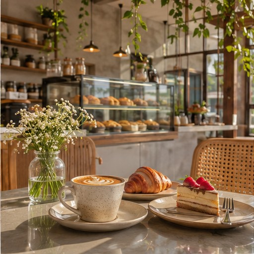

Breakfast & coffee
SLOW MORNINGStart with a relaxed breakfast, a warm cup of coffee, and absolutely no rush.
A little adventure · Nagpur
A day away from everything, filled with little adventures, delicious food, unexpected laughs, and someone special.

01 — THE PLAN
A little structure, a lot of spontaneity. The best moments don't always follow a schedule.
Start with a relaxed breakfast, a warm cup of coffee, and absolutely no rush.
Discover something interesting, wander through exhibits, and spend an hour doing something different.
Something light and tasty—just enough to keep us going before the next adventure.
Games, rides, laughter, and a little friendly competition. Let's make this the fun part of our day.
Keep exploring, try another activity, or take a little break if we feel like it. No need to rush.
Get our hands messy, create something from scratch, and leave with a memory we made ourselves.
Put on our helmets, get ready, and see who takes the victory lap.
Take a walk, explore somewhere new, sit together, talk about everything, and enjoy the little moments.
Finish the day with something sweet, a little conversation, and a memory worth keeping.
02 — THE ADVENTURES
Some planned, some spontaneous. Pick the adventures that sound like us.

Explore exhibits, discover new things, and have a little fun learning together.

Rides, games, adventures, and a day filled with laughter.

Make something with our own hands and keep a little piece of the day.

A little speed, a little competition, and plenty of reasons to laugh.
Activity photos are illustrative mood images, not verified photographs of the named venues. Confirm venue availability and timings before visiting.
03 — FOOD & LITTLE CRAVINGS
A few delicious stops. Choose the café and food we feel like having.
LUNCH · 12 PM
Keep it light before the afternoon adventure.

CAFÉ DATE · PHOTO FRIENDLY
Photo-friendly café options with the mood and menu to match.
Pink floral café inspiration · Nandanvan
Approx. ₹200–400 per person listing; verify current menuVenue details ↗Minimal bakehouse & coffee mood · New Sneh Nagar
Rating listing 4.6/5 · pricing variesVenue details ↗04 — THE BEST PART
By evening, we'll have explored, played, eaten, and probably laughed about something silly. The rest? Let's leave it to the moment.